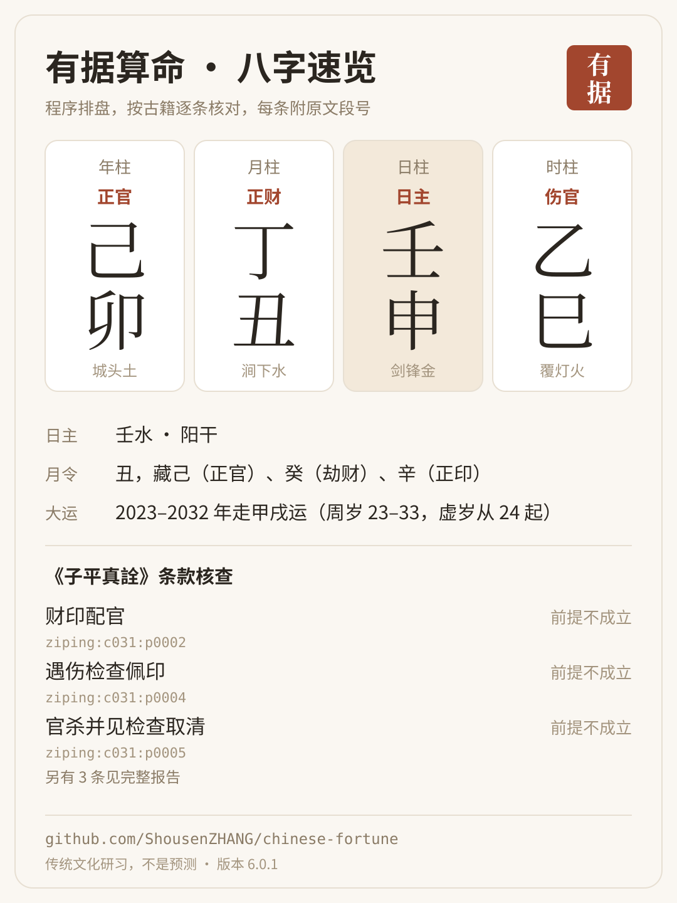

有据算命 · 示例报告
这是给 AI 用的中国术数技能。下面是一张虚构测试盘（2000 年 1 月 15 日 10:30，北京，男）的真实输出：程序排盘，按古籍逐条核对，每条结论附段号，可在随包古籍里逐字查到。
八字核对报告
- 打开报告：四柱表、离线命盘图、条款核查表、人生领域速读，完整计算资料可展开。
- 每条原文带段号，例如 ziping:c008:p0001（《子平真詮》论用神）。
- 格局只到候选、未判的条件照列，不打分、不给成功率。
报告与卡片都由技能里的脚本生成：bazi_reading.py --report … --report-style professional --card …。
分享卡片

安装
Claude Code、Codex、Cursor 等支持技能的工具里：
npx skills add ShousenZHANG/chinese-fortune --skill chinese-fortune
然后直接问：「我 1990 年 5 月 15 日上午 10 点在杭州出生，男，看看八字」。只需 Python 3.9，不用装任何包，计算不联网。
GitHub 仓库 · MIT 许可
示例为虚构测试盘，不是真实用户。内容是传统文化研习，不是预测；不做健康、投资、法律判断。